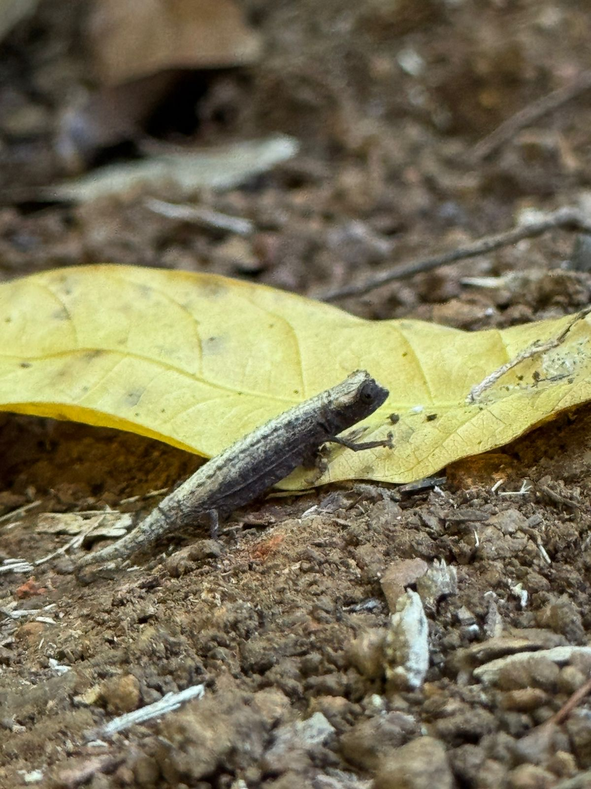
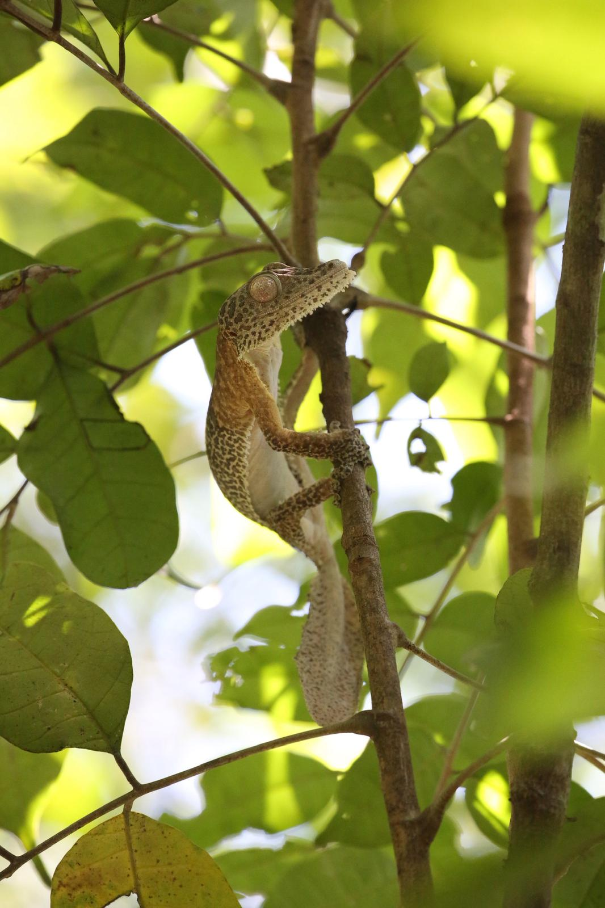
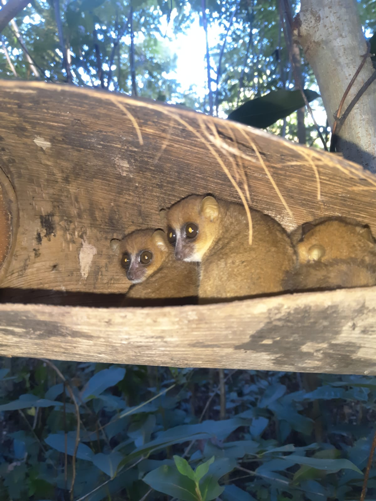
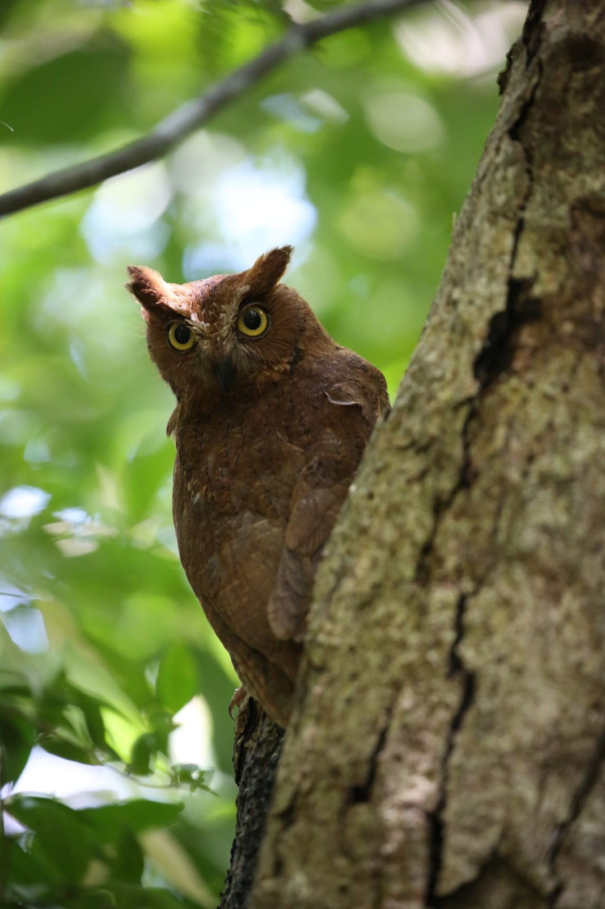
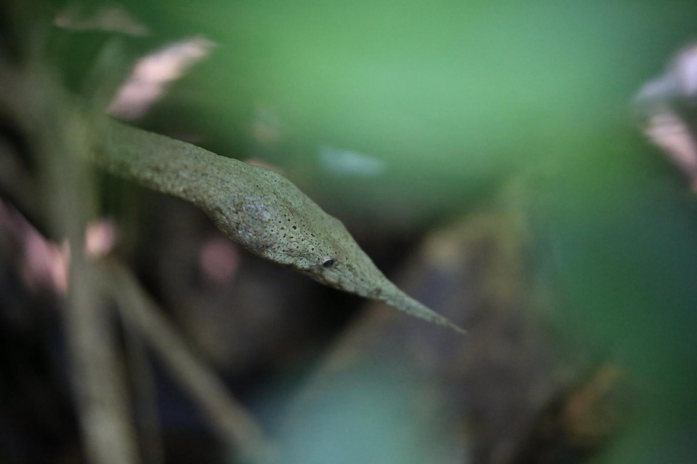

Join a local guide for an unforgettable journey through Madagascar's ancient rainforest — home to chameleons, lemurs, and creatures found nowhere else on Earth.
Book Your AdventureGrowing up on Nosy Be, the jungle was my playground. I learned to spot a leaf-tailed gecko before I learned to read. Now I share that knowledge with travelers from around the world.
Every walk through Lokobe is a conversation with nature. I'll show you the tiny Brookesia chameleon hiding on a twig, the Black Lemur leaping through the canopy, and the medicinal plants my grandmother taught me about. This isn't a tourist trail — it's an experience you'll carry with you forever.
Lokobe is the last remaining tract of primary forest on Nosy Be. This protected reserve is a living treasure chest of endemic wildlife — species that exist nowhere else in the world. Reaching it by pirogue (traditional outrigger canoe) across turquoise waters is just the beginning of the adventure.

One of the smallest reptiles on Earth. Barely the size of your thumbnail, these tiny chameleons are masters of disguise on the forest floor.
The iconic black lemurs of Nosy Be swing through the canopy in family groups. Males are jet black while females are golden-brown — a stunning contrast.

Masters of camouflage, these incredible geckos blend perfectly with bark and branches. Their large eyes and flattened tails make them one of Lokobe's most fascinating finds.

The world's smallest primates, these adorable nocturnal creatures hide in tree hollows during the day and emerge at dusk with their enormous curious eyes.

A rare nocturnal sighting for those who join the evening tours. Their haunting call echoes through the ancient trees at twilight.

With its extraordinary leaf-shaped snout, this harmless snake is one of Lokobe's most unusual residents — perfectly adapted to blend with the forest vines.
Your adventure begins with a scenic paddle across the bay in a traditional Malagasy outrigger canoe, gliding over crystal-clear waters toward the forest.
Slow-paced and immersive. I'll guide you along hidden paths, pointing out wildlife and sharing stories about the forest ecosystem and local traditions.
I know exactly where the animals hide. Get incredible close-up shots of chameleons, lemurs, and rare species with my guidance on the best angles and moments.
After the walk, enjoy a freshly prepared Malagasy meal at a beachside village — grilled fish, rice, and tropical fruits under the shade of mango trees.
The highlight of our entire Madagascar trip. Our guide's knowledge of the wildlife was extraordinary — he spotted a tiny chameleon I would have walked right past. Magical experience!
I've traveled to 40 countries and this was one of the most authentic nature experiences I've ever had. The pirogue ride alone was worth it. The lemurs were the cherry on top.
Our guide was passionate, patient, and incredibly fun. My kids (8 and 11) were completely captivated. They're still talking about the chameleons weeks later. Highly recommended for families!
Beyond Lokobe, we organize unforgettable day trips around Nosy Be and its islands. Swipe to explore — contact us for details and pricing.
Discover the vibrant coral reefs and tropical marine life around Nosy Be. Crystal-clear waters with sea turtles, rays, and colorful fish.
Ask for infoVisit the "Island of Lemurs" — meet friendly black lemurs up close, explore local craft villages, and enjoy a beach lunch on this beautiful island.
Ask for infoA marine reserve paradise with the best snorkeling around Nosy Be. Swim alongside sea turtles in turquoise lagoons and relax on pristine beaches.
Ask for infoExplore the charming capital of Nosy Be — its lively market, colonial architecture, local spice stalls, and the vibrant daily life of the island.
Ask for infoThe stunning "Turtle Island" — two islets connected by a white sandbar at low tide. A paradise for swimming, snorkeling, and unforgettable photos.
Ask for infoMarvel at the dramatic red limestone needle formations near Ambilobe — a surreal, otherworldly landscape unique to northern Madagascar.
Ask for infoExplore Montagne d'Ambre National Park — lush rainforest, cascading waterfalls, and rare chameleons hidden in one of Madagascar's most biodiverse parks.
Ask for infoDiscover the legendary tsingy limestone forests, underground rivers, and sacred caves of Ankarana — home to crowned lemurs and hundreds of bat species.
Ask for infoSend me a message and I'll get back to you within 24 hours to confirm your tour. Flexible scheduling — I'll work around your travel plans.
Thank you for your booking request! I'll get back to you within 24 hours to confirm your tour.